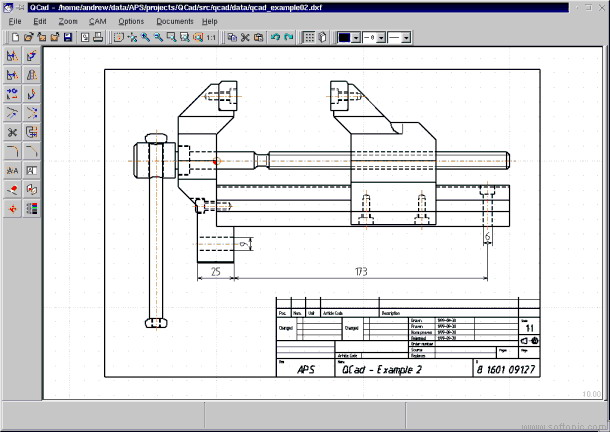

Unidad Didáctica 1: Diseño Asistido por Ordenador
4.1. Programas para el dibujo de planos.
Hablamos
de programas como AutoCAD (que es el que vamos a manejar en nuestro aula) MicroStation, QCAD o TurboCAD. En ellos, además de las
operaciones citadas anteriormente, podemos realizar estas otras:
- Trabajo con capas, que permiten distinguir entre distintos grupos de líneas y objetos, y visualizarlos o activarlos a nuestro gusto. Es posible también trabajar con varios pisos de un edificio superpuestos en un mismo plano, para comprobar que encajan, y modificarlos luego por separado.
- Medida de las longitudes y superficies de las figuras dibujadas.
- Acotación de forma normalizada de líneas y ángulos.
- Definición automática de puntos significativos de las entidades ya dibujadas (punto medio, punto final, centro, tangente) y posibilidad de referirse a ellos para crear las siguientes figuras.
- Definición de las figuras en tres planos, para conseguir la tridimensionalidad, según las coordenadas (X, Y, Z) de cada punto, o dibujo de entidades 3-D directamente.
- Modificación de las propiedades de cada entidad dibujada.
- Inserción de bloques de líneas que respondan a objetos predefinidos desde librerías externas al programa (mobiliario, perfiles metálicos, símbolos variados, etc.).
- Asignación de un grosor determinado a cada color de línea para la posterior impresión de los planos.
Observa en el siguiente vídeo cómo trabaja AutoCAD
Obra publicada con Licencia Creative Commons Reconocimiento 2.5